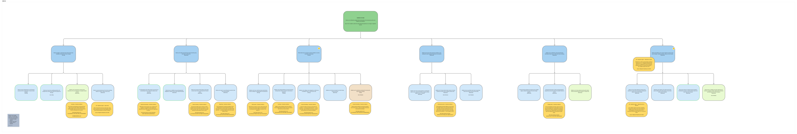
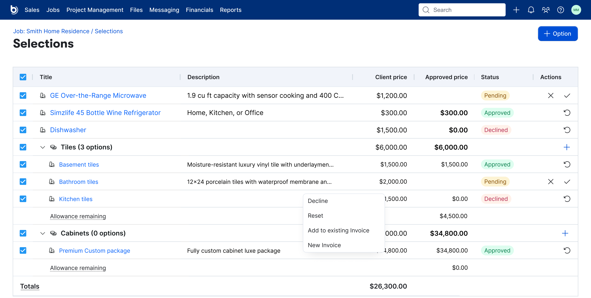
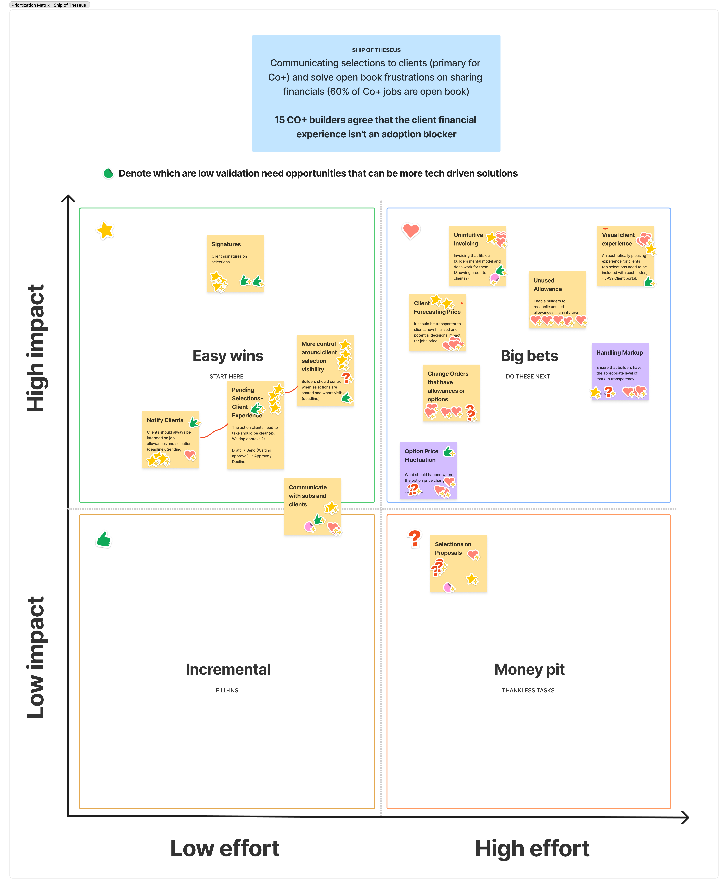

Selections Reimagined
Selections are where design decisions become financial commitments. Every countertop, faucet, or flooring call becomes a line item that moves the budget, the invoice, and what the client believes they still have to spend. This case study covers the two sub-threads I'm leading: invoicing new selections on progress invoices, and designing a client-facing selections experience clients can actually understand.
Why this matters
The legacy Selections workflow in Buildertrend was everything that should not be true of a feature this load-bearing. Builders didn't trust the math. Markup didn't reliably carry through. The rigid allowance → selection → choice hierarchy didn't match how real jobs happen. Clients couldn't see the price impact of a decision before approving it. Most builders who tried to rely on it ended up back in a spreadsheet.
"Builders do not trust it. They do not trust the math, how selections connect to budgets and billing, or what their clients are actually seeing." — Selections Reimagined Q2 Overview
"It doesn't serve to be the forefront of how we manage selections… we still do the heavy lifting outside." — Louie Anderson, custom builder
There's appetite for something new. A recent sentiment survey found 95% of builders said they're likely to try a new selections experience, most within the first 30 days of release. The question isn't whether to rebuild. It's whether the rebuild resolves the specific trust failures that pushed builders out in the first place.
The Q2 Selections Reimagined effort is a ground-up redesign with a pointed lens (Co-Construct builders migrating into Buildertrend), because that segment depends on selections working end-to-end. Two threads I'm designing in parallel:
- Invoicing new selections — letting builders bill selections that change scope (allowance overages, new cost codes, post-contract decisions) without re-entering data or double-counting on the job total.
- Client-facing selections experience — giving clients a clear view of what they've chosen, what's pending, what it costs, and what's still to decide, on a timeline that matches how the job actually runs.
The current workflow, mapped
Before redesigning, we mapped the legacy selections workflow end-to-end so we could see exactly where friction accumulated. The map below traces what a builder does today from estimate through invoicing, with the broken seams called out in place.
Open PDF: current selections workflow.pdf ↗
How we approached it
Selections is wide. To avoid the "design the whole feature at once" trap, we framed the problem through five situational variables that describe how a given builder's selections workflow actually runs:
The five variables that shape selections
- Who decides — builder, client, or designer
- How much optionality — curated tiers vs. open-ended
- When decisions happen — pre- vs. post-contract
- How the job is priced — fixed, cost-plus, allowance-driven, or semi-custom upgrade-delta
- Level of standardization — templated vs. fully custom
Those variables combine into different builder archetypes (spec, custom, remodeler, cost-plus, design-build, semi-custom), each of whom runs Selections differently. One rigid workflow can't serve them all. The design goal is structured flexibility: guardrails that protect the financial math without forcing any one way of working.
Research methods
- Builder interviews across the range — Kevin Madden, Lindsay Lapham, Andrew Couchey, John Rainone, Blake Demlang, and others from the Co+ migration pipeline.
- Sentiment survey with 95% of builders saying they'd try a new selections experience.
- EnjoyHQ corpus review — both legacy Selections feedback and early new-Selections feedback.
- Competitive UX review of how other platforms handle the selection-to-invoice flow and the client view.
- Three working prototypes tested in interviews: a CreateFromBid flow (base44), a price-visibility prototype in Figma, and a selection invoicing prototype.

SoT Q2 2026 Discovery board — customer interviews, opportunity solution tree, and problem clusters on one canvas.
The problem statements
Out of the discovery work, I synthesized eight problem statements: four high-level clusters tied to client and builder needs, and four specific sub-problems underneath them. These are the frame we're designing against.
Four high-level clusters
- Financial visibility. Clients need continuous financial clarity throughout the selection decision (before, during, and after) so they can participate as informed financial partners.
- Guided decisions. Homeowners need to know what decisions are needed, in what order, and what's at stake if they delay. Today all pending selections look equally urgent, and there's no context connecting a decision to a real construction consequence.
- Approval / audit trail. When a selection needs a minor post-approval amendment, builders need to make that correction without voiding the homeowner's original consent. Today any modification requires un-approving the selection entirely, restarting the approval flow.
- Notifications and discoverability. When a builder makes selections or allowances visible to a client, the client has no way of knowing. BT sends no notification. Discovery depends on the client remembering to log in, which can leave decisions sitting unactioned with no signal to either party.
Four sub-problems sitting underneath
- Allowance visibility before decisions. Clients don't know what financial decisions are coming until the builder sends a request, so they can't plan, ask questions, or surface concerns early.
- Budget impact awareness. Clients make choices without knowing whether they're over or under the allowance, or what the cumulative financial impact looks like across all selections.
- Accurate financial records. Once a client approves a selection, there's no running tally of cumulative financial impact. Clients who want to track where they stand must maintain their own records outside Buildertrend.
- Invoice clarity. When a client receives an invoice, BT's line-item structure is optimized for builder accounting, not client communication. Builders routinely hide the line items entirely and manually write a description of the work, breaking the financial thread from approved selection to payment, and creating extra work on every invoice.
What builders taught us
The problem statements crystallized out of builder interviews where the same patterns kept surfacing. A few of the most specific findings:
Real-world selection journey
To ground the patterns in actual jobs, I traced a real-world selection journey from first conversation through invoice. The map below shows where handoffs happen, where decisions stall, and where the spreadsheet workarounds live.
Open PDF: real-world-selection-journey.pdf ↗
Allowance + markup confusion (universal)
Markup inflates the visible allowance, so clients believe they have more to spend than they actually do. Kevin Madden (Double Eagle Builders) stopped using BT allowances entirely. He manually adds two line items per selection (cost overage + builder fee overage) to show clients a real shopping budget.
"The less that we have to go back in and adjust, the better." — Josiah Carroll
Double-counting at the change-order boundary
The loudest reconciliation failure. Adding allowances after "send to budget" or on change orders double-counts money on the job total. The builder workaround: rebuild the entire estimate.
"The client is now essentially showing a double charge… I can't reconcile back to the contract price." — Lindsay Lapham
No allowance reconciliation at closeout
Overages and underages don't close out cleanly. John Rainone (Platinum Group) described the explicit fix:
"Almost no allowance comes in on the penny… you would be able to go to a Selections overview and the system is smart enough to tell you what you have billed and closed out, and what items remain open. You could then transfer an underutilized allowance to an overage and then easily invoice for items the client may still owe." — John Rainone, Platinum Group
Clients can't see price impact before approving
A client is asked to approve a selection without seeing how it changes their contract price. This was the loudest signal on the client-experience side: the thing clients most want, the thing legacy Selections most fails to deliver.
"There is no way for our customer to see their selections and their budget at the same time." — Wendy Warner, Muse
"There's just no way to see… what the proposed total is unless you add it up or select everything." — Tyler Burslem
Drafts leak to clients
A pain point builders didn't know they had: unfinished selections become visible to the client the moment a builder hits save. By the time the builder realizes, the client has already seen a half-priced, half-described selection. This is a confidence failure for both sides.
No urgency model
Overdue selections drop silently from the client's "Available" queue to "Closed," so they become invisible exactly when they're most important. Kevin Madden asked for the Co-Construct pattern: tiered yellow/red urgency that surfaces before items become schedule problems.
When a selection changes scope, money has to move correctly
This is the sub-problem that touches everything downstream: the invoice, the budget, the change order, and what the client sees. Two threads run in parallel — this one handles the money, Part 2 handles the client experience.

The selections workspace — from any approved selection, builders can route it directly into a new or existing invoice. The design keeps allowance context visible (allowance remaining rows) so the builder always sees what's absorbed vs. what's an overage before billing.
Cases the design has to handle
- Selection within allowance — nothing moves on the invoice; allowance absorbs it.
- Selection over allowance, same cost code — bill only the overage, surface it under Approved changes (the pattern we validated on progress invoicing). For multi-item allowances, allocate the overage proportionally across items.
- Selection over allowance, different cost code — credit the allowance and invoice the full amount under the new cost code, so job totals still reconcile to zero.
- Post-contract selection with no allowance — route through a change order so the client approves scope and financial impact together.
- Allowance closeout — transfer underutilized allowances into overages at billing, so jobs end clean instead of forcing a manual reconciliation.
- Selection on a cost-plus job — markup applies to actuals, not the allowance. Different math, different display.
Specific asks that shaped the flow
- Negative CO pulls from selection allowances — Cooney Homes (Lincoln Alexander / Bailey Truett): "save ALOT of time costing overages and underages."
- Dollar-amount entry, not only % — Brittney Loweree (Superior Custom Homes).
- Incremental billing for overages with mobile-friendly approval links — Jen Kravitz (York Building Cape Cod).
- Selections invoicing without double-billing — David Thorne (Construction Management Pros) flagged this as the reason he'd abandoned BT selection invoicing.
The design problem is surfacing all of these cases through one interface a builder can read quickly, without making any single case feel like an edge path.
Where this leads next
Part 1 keeps the numbers honest on the builder's side. Part 2 flips the same problem around and asks: what does the client see when a selection changes scope? If we get the money right but not the message, clients still can't trust the total they're being asked to approve.
What clients need to see at any moment in the job
Clients want to know three things at any given moment: what have I chosen?, what have I not yet decided?, and what did that choice cost me? Legacy Selections answered none of them well.
Principles shaping the client view
- Show upgrade deltas, not line-item markup. Clients see the difference from the allowance, not the builder's internal pricing math. A semi-custom builder I spoke to ("we don't provide the base cost… we just show what the upgrade costs are") makes this their entire client model.
- Timelines, not lists. Selections are time-sensitive: flooring precedes install, cabinets precede framing. The client view organizes by what's urgent, not alphabetically.
- A running tally of the contract price. Every approved selection updates a visible "revised price" so clients always know where they stand.
- Overdue is visible, not silent. Surface urgency tiers (overdue, due this week, upcoming) before items become schedule problems.
- Preview before approve. A client sees how a selection changes their contract price before hitting approve.
- Drafts stay drafts. Unfinished selections don't leak to the client just because a builder hit save.
- Builder-controlled gating on price updates. Blake Demlang's ask: don't auto-update the contract price on client approval, since some builders need manual gating because changes affect bank financing.
Visual-first, price-second
Blake Demlang (Demlang Builders) wants a dual-view: a visual showroom for browsing selections, separate from a financial summary. Pricing is present but not "in their face"; clients are making aesthetic decisions first and budget decisions second. The same builders also want the three-tier contract model (base → first options agreement → subsequent COs) that Buildertrend's current two-tier structure (original vs. revised) doesn't support.
Client view prototype
A working prototype of the client-facing selections view, built to stress-test the principles above against realistic data shapes. Scroll through the queue, preview a pending selection, and watch the revised client price update live.
Assumptions baked into this view
- Timeline-first organization — selections are grouped by urgency (overdue, due this week, upcoming, decided), not alphabetically. Assumes clients scan by "what's next to decide."
- Upgrade deltas, not markup — clients see the difference from the allowance instead of the builder's internal pricing. Assumes the delta is what clients care about: the shopping budget.
- Running revised client price — every approved selection updates a visible total. Assumes clients want continuous visibility into where they stand, not a once-at-invoice number.
- Preview before approve — the price impact of a pending selection is visible before the client hits approve. Assumes the current "approve first, discover cost later" flow is what's breaking trust.
- Drafts stay hidden — unfinished selections don't surface to the client until the builder explicitly sends them. Assumes builders need a safe space to work in-progress without leaking half-priced selections.
- One urgency model — tiered overdue / due-this-week states match the Co-Construct pattern that existing Co+ builders are migrating from. Assumes this translates across segments.
What still needs validation
- Is upgrade-delta language clearer than line-item pricing? Test with clients across fixed-price, cost-plus, and semi-custom jobs. A semi-custom client might read deltas well; a cost-plus client may expect to see actuals.
- Does timeline-based organization match client mental models? Run a Maze card-sort or first-click test. Clients may think in rooms or trades rather than dates.
- Urgency tier thresholds. How many days before "upcoming" becomes "due this week"? Thresholds need to match real scheduling lead times for long-tail items like flooring and cabinets.
- Builder gating preferences. Blake Demlang flagged that some builders need manual approval on price updates; test how many builders actually want this vs. auto-update, and whether it becomes a settings-level choice.
- Three-tier contract model. Test the mental model against Buildertrend's two-tier structure: where does a "first options agreement" live, and does it need its own artifact, or can we simulate it with a savepoint on the Estimate?
- Co+ migration parity. Run side-by-side with Co-Construct's client view with builders actively moving platforms, so "parity vs. worse" doesn't become an adoption blocker.
Where Ship of Theseus picks this up
The Paper Crane team led the broader Selections Reimagined initiative and shipped the foundation through Q1 — allowance overage invoicing released on 4/1, which closed one of the biggest double-billing pain points in legacy Selections. They scoped selection invoicing as a staged release and handed the later slices to Ship of Theseus so they could land inside the same frictionless invoicing arc as progress invoices.
The slices we're taking
- Slices 0–1 · Paper Crane, shipped — fixed-price invoicing paths include pre-approved selections; allowance overages can be invoiced directly.
- Slice 2 · Ship of Theseus, in-flight — a selection invoicing wizard that guides the remaining balance so builders don't have to math it themselves.
- Slice 3 — invoice post-contract selections.
- Slice 4+ — progress-invoice integration, job + selection-level pricing visibility, underages and credits, edge cases.
Selection invoicing wizard
The wizard is the first piece Ship of Theseus owns. It lives as a modal on both standard and progress invoices, surfacing invoiceable selections and allowances via a new endpoint and guiding builders to the correct remaining balance without manual reconciliation. Aligning invoicing to the Revised Client Price means Buildertrend can act as the system of record for deltas — selections drive contract value; invoicing captures only what's left.

Mapping the opportunity landscape
Before narrowing on the client financial experience for Q2, we ran a cross-functional opportunity workshop with PMs, designers, developers, and customer success. Dozens of pain points landed on the board, which we clustered into themes to see where friction concentrated:
Client decision-making
Pending states that confuse, no deadlines, no notifications, no price preview, selections leaking to clients before the builder is ready.
Budget & invoicing clarity
Hard to track how selections impact the budget, unused allowances at closeout, confusing invoicing for standalone options and overages, markup handling.
Reuse & efficiency
Can't copy selections within a job, can't pull from past jobs, can't import from Excel or product websites, can't reuse saved catalog items.
Workflow integration
No clean link from selection to schedule, spec, PO, or change order. Duplicate data entry across surfaces.
Visibility & communication
No activity log, no comments, unclear what the client sees, no way to set permissions, no way to notify.
Visual + mobile
Hard to evaluate options visually, legacy experience missing on mobile, hierarchy on the list page isn't obvious.
Prioritization matrix
We ran the themes through an impact vs. effort matrix. Our team's Q2 focus sits in the top-right Big bets quadrant — the client financial experience in particular, which lines up with the Co+ research and 60% open-book exposure. Easy wins on the left feed the backlog for the next sprint planning cycle.

Q2 discovery: the client financial experience
While the wizard builds, I've been running Q2 discovery to frame the next wave of work. Fifteen Co+ builders so far agree the client financial experience isn't itself an adoption blocker, but three related pain points keep surfacing:
- Clients can't see how a pending selection will change their contract price before they approve it.
- On open-book jobs (60% of Co+ jobs), markup on selections gets rolled into the allowance amount, confusing clients about how much they actually have to spend.
- Clients see "price adjustments" on the financial summary with no explanation of why the total changed.
These three sit at the intersection of selections and financial transparency — which is exactly the seam the client-view prototype is designed to test.
What's next
- Ship the selection invoicing wizard — land slice 2 on standard invoices first, then on progress invoices so both workflows share one mental model.
- Client-view prototype validation — test the principles above against the CAB with a Maze survey, then iterate on what builders and clients surface.
- Prototype concepts for the three Q2 pain points — pending selection price preview, open-book markup transparency, and an explanation layer for price adjustments on the financial summary.
- Co+ migration validation — testing the end-to-end flow with builders actively considering the move from Co-Construct to Buildertrend.
How we're validating it
Selections Reimagined is a longer arc than a single release. The validation strategy runs on three layers:
- Ongoing CAB & Co+ interviews — continuing with builders already in the discovery round so we can test prototypes against the same workflows we learned from.
- Maze surveys for specific design decisions (client view layouts, change-order-plus-selection patterns) before we commit.
- Adoption + reconciliation data — once the first releases ship, watching whether builders actually use the new flow and whether overage reconciliation happens automatically instead of through the manual workarounds legacy Selections forced.
Reflection
Selections is the widest feature I've worked on at Buildertrend — not because it has the most screens, but because every builder runs it differently. The five situational variables (who decides, how much optionality, pre- vs. post-contract, pricing model, level of standardization) combine into archetypes that don't share a single workflow. A rigid redesign would have traded one set of workarounds for another.
The shape that held up was structured flexibility: guardrails around the math that everyone has to share, and configurability around how work actually gets done. That's also what made the hand-off to Ship of Theseus work — Paper Crane owned the math piece (allowance overages, contract price reconciliation) and handed us the workflow layers that sit on top.
A few things I'd do differently next time:
- Start with the client experience earlier. The builder-side cases were easier to enumerate, so they led. But the client experience shapes whether builders actually adopt the new flow — without it, we were redesigning the back office without a reason for the front door to change.
- Cut the long tail faster. The opportunity board held dozens of real pain points. Running the prioritization matrix earlier would have let us signal to stakeholders what was out of scope before the list got long enough to feel like every concern was on the table.
- Protect prototype test time. The client-view prototype was the single most useful artifact for conversations with builders, but it got built after problem framing, not alongside it. Next time, I'd scaffold the prototype early and let it shape discovery instead of the other way around.